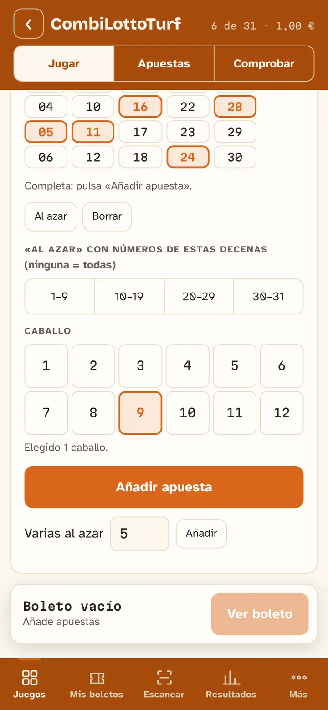

Lototurf
App independiente. Combinario no es oficial ni tiene relación con Loterías y Apuestas del Estado (SELAE). No vende apuestas: solo te ayuda a prepararlas, y se validan y se pagan en un punto de venta. Solo para mayores de 18 años.
En la app se llama CombiLottoTurf. Marcas 6 números del 1 al 31 y un caballo del 1 al 12. Lo demás funciona como en La Primitiva.

- Múltiples de 6 a 10 números con 1 a 4 caballos (con 6 números, al menos 2 caballos).
- En las reducidas, el caballo puede ir el mismo en todas las apuestas o repartido.
- El reintegro no se elige: lo pone el terminal.
- Cada apuesta cuesta 1,00 €.
Tabla: algunas reducidas de Lototurf
Con un caballo en todas las apuestas. La garantía es de aciertos de números si los 6 que salen están entre los tuyos.
| Tus números | Garantía | Apuestas | Coste | Salen los 6 entre los tuyos |
|---|---|---|---|---|
| 9 | 3 aciertos | 1 | 1,00 € | 1 de cada 8765 |
| 12 | 3 aciertos | 2 | 2,00 € | 1 de cada 797 |
| 14 | 3 aciertos | 4 | 4,00 € | 1 de cada 245 |
| 8 | 4 aciertos | 1 | 1,00 € | 1 de cada 26.296 |
| 10 | 4 aciertos | 3 | 3,00 € | 1 de cada 3506 |
| 12 | 4 aciertos | 6 | 6,00 € | 1 de cada 797 |
| 14 | 4 aciertos | 15 | 15,00 € | 1 de cada 245 |
| 8 | 5 aciertos | 4 | 4,00 € | 1 de cada 26.296 |
| 9 | 5 aciertos | 7 | 7,00 € | 1 de cada 8765 |
| 10 | 5 aciertos | 14 | 14,00 € | 1 de cada 3506 |
| 11 | 5 aciertos | 22 | 22,00 € | 1 de cada 1594 |
| 12 | 5 aciertos | 39 | 39,00 € | 1 de cada 797 |
Reducida normal, tal como la da la app. Cada fila está comprobada con todas las formas posibles de salir los 6 números (el caballo va aparte): en todas se cumple la garantía. La última columna dice en cuántos sorteos, de media, se da la condición para que la garantía cuente; si no se da, puede haber premio, pero no está asegurado. La app tiene muchas más combinaciones.